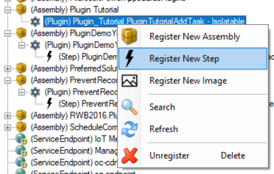
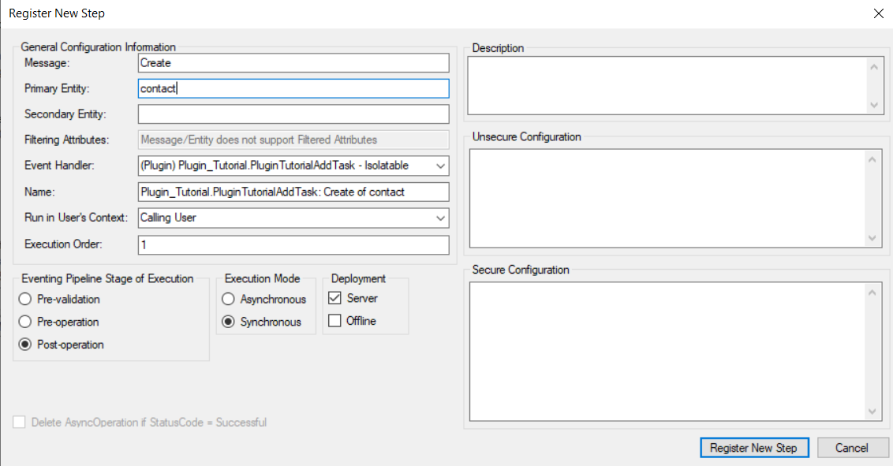
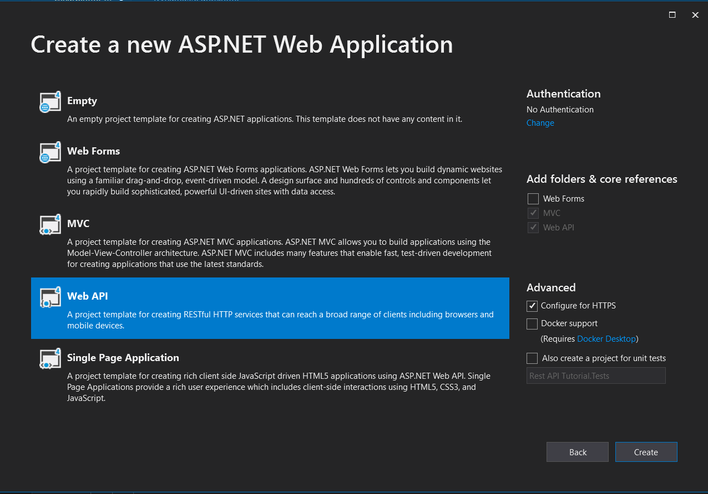
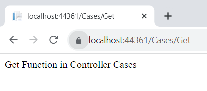
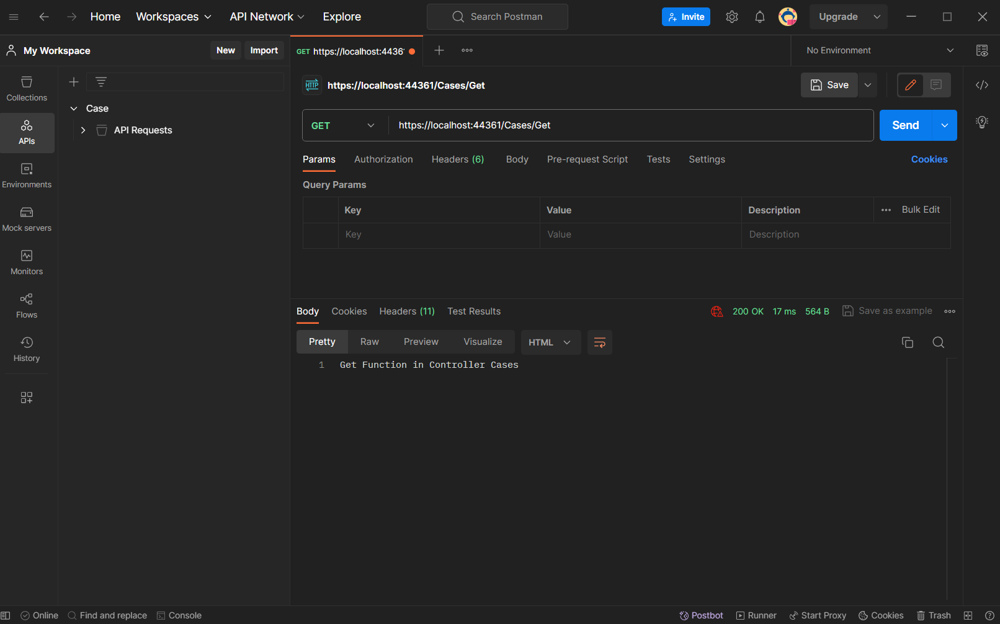
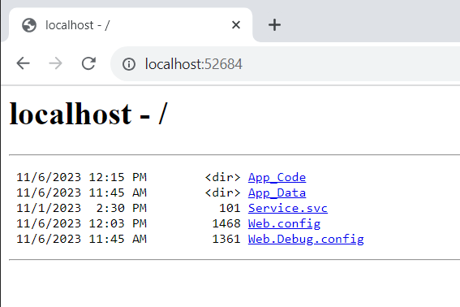
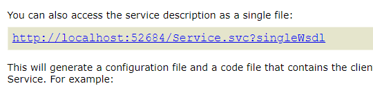
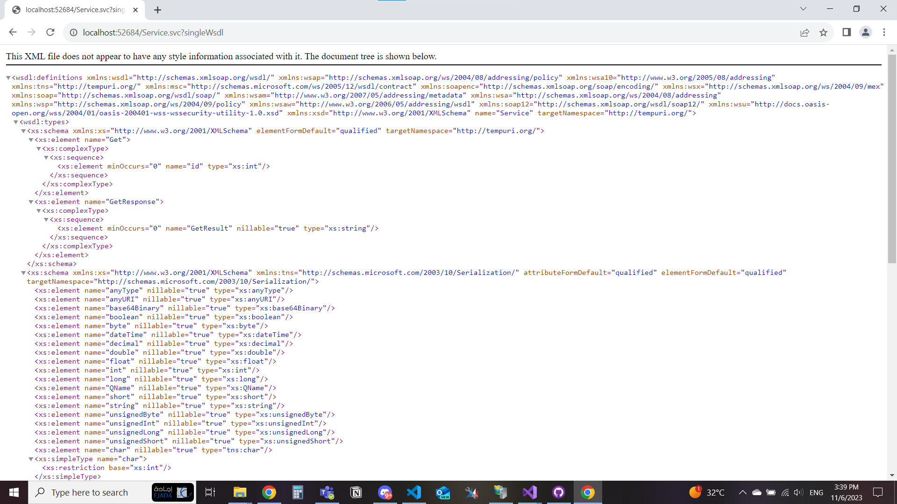

CRM C# Tutorial
Basic Plugin
- Open Visual Studio and Create a new Class Library (.Net Framework)
- Target Framework 4.7.1 can work with other versions but this version is the one that the tutorial uses
- (Optional) from the right explorer panel change the name of the class to a more meaningful name than class1.cs
- Right click the project from the right panel and click Manage Nuget Packages
- Search for Microsoft.CrmSdk.CoreAssemblies and install it
- Copy this code, Code Explaination Here
- Right Click Project > Properties > Signing
- mark Sign The Assembly True
- Click on the dropdown menu and click new
- Choose a strong unique name for the key file, disable password and click OK
- Build The Project
- Right click the project and select Open Folder in File Explorer
- Navigate to bin > Debug
- Find the dll file with your class name class1.dll You will use this file directory in the registration
- (One-Time) Download Plugin Registration Tool or XRM Tools and download from it Plugin Registration Tool
- Connect the plugin Registration tool to your environment
- Click Register > Register New Assembly
- Load The assembly file then click register selected plugins
- Navigate to your newly registered assembly in the XRM plugin registration tool
- Right click on the file inside the assembly package then click register new step 
- Select the message (Event Trigger) that is right for your plugin
- Select the entity that is related to the selected message (Event Trigger)
- Click Register New Step 
- Test The Plugin in your environment
- Sample DLL File : Download


using System;
using System.Collections.Generic;
using System.Linq;
using System.Text;
using System.Threading.Tasks;
using Microsoft.Xrm.Sdk;
namespace Plugin_Tutorial
{
public class PluginTutorialAddTask : IPlugin
{
public void Execute(IServiceProvider serviceProvider)
{
ITracingService tracingService = (ITracingService)serviceProvider.GetService(typeof(ITracingService));
IPluginExecutionContext context = (IPluginExecutionContext)serviceProvider.GetService(typeof(IPluginExecutionContext));
IOrganizationServiceFactory serviceFactory = (IOrganizationServiceFactory)serviceProvider.GetService(typeof(IOrganizationServiceFactory));
IOrganizationService service = serviceFactory.CreateOrganizationService(context.UserId);
if (context.InputParameters.Contains("Target") && context.InputParameters["Target"] is Entity)
{
// Main Logic To Edit
Entity task = new Entity("task");
task["subject"] = "Task Subject (Plugin)";
task["description"] = "Task Description (Plugin)";
service.Create(task);
}
}
}
}

if the step message is Create and the entity is Contact then go create a new contact and the plugin code should run and provide you with the defined logic
Basic Plugin Code Explaination
The Refered Code is from Here
This Represents the used libraries, you could add on them what is needed for your own projects
using System;
using System.Collections.Generic;
using System.Linq;
using System.Text;
using System.Threading.Tasks;
using Microsoft.Xrm.Sdk;Your class needs to inherit the IPlugin interface to be able to run the plugin functions
public class PluginTutorialAddTask : IPluginThe Plugin Main function, the first one to get called
public void Execute(IServiceProvider serviceProvider)Here, you're creating an instance of the ITracingService interface. In CRM Dynamics plugins, the tracing service is used for logging or tracing messages during plugin execution. The serviceProvider.GetService method is used to retrieve an instance of the specified service type (in this case, ITracingService) from the service provider.
ITracingService tracingService = (ITracingService)serviceProvider.GetService(typeof(ITracingService));This line creates an instance of the IPluginExecutionContext interface. The plugin execution context provides information about the current execution of the plugin, including details about the event that triggered the plugin and the data associated with the event.
IPluginExecutionContext context = (IPluginExecutionContext)serviceProvider.GetService(typeof(IPluginExecutionContext));Here, you're creating an instance of the IOrganizationServiceFactory interface. The organization service factory is responsible for creating instances of the IOrganizationService, which is used to interact with the CRM Dynamics service.
IOrganizationServiceFactory serviceFactory = (IOrganizationServiceFactory)serviceProvider.GetService(typeof(IOrganizationServiceFactory));Here, you create an instance of the IOrganizationService interface. This service allows you to perform operations, such as creating, updating, retrieving, and deleting records in the CRM Dynamics organization. The service is created using the CreateOrganizationService method of the organization service factory, and it's associated with the user ID from the plugin execution context.
IOrganizationService service = serviceFactory.CreateOrganizationService(context.UserId);This line checks for the target entity wether it exists or not
if (context.InputParameters.Contains("Target") && context.InputParameters["Target"] is Entity)this code creates a new task with placeholder subject and description then saves it the crm database
Entity task = new Entity("task");
task["subject"] = "Task Subject (Plugin)";
task["description"] = "Task Description (Plugin)";
service.Create(task);Custom Workflow
Custom Action
One of the important types of Custom activity is Code Activity which enahble you to write custom logic directely into the workflow without having to create a separate class for the activity.They are useful for implementing specific functionality that cannot be easily achieved using the standard activities provided by WF.
Some tips on custom action
To make a code activity your class should implement CodeActivity as follows:
public class CodeActivityTutorial : CodeActivitySince you implemented CodeActivity then you should override it's function Execute and pass the CodeActivityContext to it.
protected override void Execute(CodeActivityContext executionContext){}Some lines you can write inside Execute function that will help in retrieving information:
IWorkflowContext context = executionContext.GetExtension(); You can use this line to:
- Access execution details:
- Retrieve information about the user triggering the workflow.
- Enabling you to personalize the workflow behavior based on the user's role or permissions
- Modify Workflow Behavior:
- Use the input information to change how the workflow works depending on the data you have.
- Allowing you to create special actions depending on the particular information provided.
var serviceFactory = executionContext.GetExtension();
var service = serviceFactory.CreateOrganizationService(context.InitiatingUserId); Those two lines help in getting the tools that you will use to Create, Update, Delete a record. It can also help in retrieving data, executing business logic, or triggering workflows and processes.
Input and output parameters:
[RequiredArgument]
[Input("Name")]
public InArgument Name { get; set; } This is an example of input argument where we take string (name) as input and it's required to enter it.
[Output("Description")]
public OutArgument Description { get; set; } This is an example of output argument
Here is an example that will show the usage of what we discussed:
public class CodeActivityTutorial : CodeActivity
{
[RequiredArgument]
[Input("Name")]
public InArgument Name { get; set; }
[RequiredArgument]
[Input("Related Account")]
[ReferenceTarget("account")]
public InArgument relatedAccount { get; set; }
[Output("Description")]
public OutArgument Description { get; set; }
protected override void Execute(CodeActivityContext executionContext)
{
IWorkflowContext context = executionContext.GetExtension();
var serviceFactory = executionContext.GetExtension();
var service = serviceFactory.CreateOrganizationService(context.InitiatingUserId);
// Get the user name
string name = Name.Get(executionContext);
// Get the account name from the lookup field
EntityReference relatedAccountName = relatedAccount.Get(executionContext);
// Get the value of the optionSet field
int poiTypeValue=poiType.Get(executionContext).Value;
//Prepare the output string that will appeare in the description field
string descriptionOutput = "Record is deactivated. Name: " + name + ", Related Account: " + relatedAccountName.Name
+"Poi Type Value = " + poiTypeValue ;
this.Description.Set(executionContext, descriptionOutput);
}
} REST Api
- Open Visual Studio and Create a new ASP .NET Web Application (.Net Framework)
- Target Framework 4.7.1 can work with other versions but this version is the one that the tutorial uses
- Choose Web API and make sure the MVC Design Pattern is checked 
- Create a new controller in the controllers folder
- Create a simple Get Action (function) that returns any data
- Run the project from the top run button and Test the function through link https://Your_LocalHost/ControllerName/Action 
- Open POSTMAN
- Create a new Request
- Paste the link inside the new request
- send the request and wait for the response 
- Add new functions in the controller tailored to your need then test them on postman
public string Get()
{
return "Get Function in Controller Cases";
}Test On POSTMAN
SOAP Api
- Open Visual Studio and Create a new WCF Service
- Target Framework 4.7.1 can work with other versions but this version is the one that the tutorial uses
- in App_Code > IService.cs create a new Operation Contract
- in App_Code > Service.cs create the actual implementation of the function
- Run the project
- from the directory list that appears select your SVC file 
- Click on the single WSDL File 
- Copy the WSDL File without the first line that start with "This XML File Does not appear" 
- Paste in any file editor and make the file extension .wsdl
- Sample WSDL File : Download
- Open SOAP Ui
- Create New Project
- Right Click project > Add WSDL
- Paste the single WSDL Ex : http://localhost:52684/Service.svc?singleWsdl or upload the WSDL file that we created
- Test your endpoints
if you can't find WCF Service make sure that the visual studio installer has Windows Communication Foundation installed
[OperationContract]
string Get();public string Get()
{
return "Fetched Data";
}